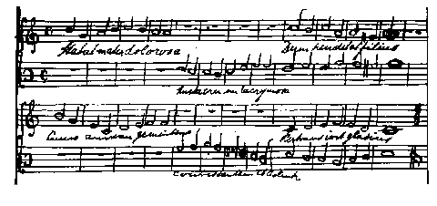
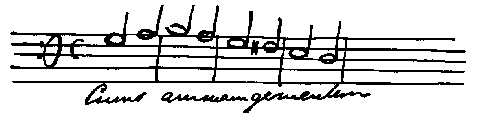

Letters of Frederick Engels 1839
[Bremen] Jan. 7, 1839
Dear Marie,
I hope you have now had that tooth extracted or that it was not necessary. — The riddle about the pond is very nice but you ought to be able to solve it yourself. Listen, composing is hard work; you have to pay attention to so many things — the harmony of the chords and the right progression, and that gives a lot of trouble. I'll see if I can’t send you something again next time. I am now working on another choral, in which the bass and soprano voices alternate. Have a look at this.

The accompaniment is still missing, and I'll probably make some changes too. It is obvious that most of it, except the fourth line, has been stolen from the Hymn Book. The text is the well-known Latin Stabat mater dolorosa juxta crucem lacrymosa Dum pendebat filius.
The Pastor [Georg Gottfried Treviranus] killed a pig in the wash-house at midday today. At first his wife would not have anything to do with the whole business, but he said he wanted to make a gift of it to her, so she had to take it. And the pig didn’t scream at all. Once it was dead all the females in the family came in. But the old granny would not let anyone take her place stirring the blood and it looked quite strange. They will be making the sausage tomorrow, that is really the thing for her.
You say you saw a monkey and that it was you. Do you know that on the wafer with which you sealed your little letter there was written: Je dis la vérité?
It also has a mirror drawn on it.
Tell Mother that she should not write “Treviranus”, she can leave out the Herr Pastor from the address altogether, the postman knows where I live anyway, as I fetch the letters from the post every day; besides, he might be tempted not to bring my letters to the office but to me at the Treviranus’ and there I only get them a couple of hours later when I come home.
Strücker wrote me that on the Sunday before New Year Hermann acted all sorts of things, including a waiter, etc. He must write to me about it. — Strücker was full of praise for his skill, saying that Hermann played the part of the waiter as well as if he had worked in a restaurant for three years. Is he growing a lot?
Tell Mother not to show my composition to Schornstein or he will say again — that is the end of everything. You see, I learn everything that happens. Next time I am in Barmen again I shall become the consul for Bremen like the Old Man. [Heinrich Leupold]
Addiós mi hermana
Yours,
Friedrich

Please excuse all the mistakes I have made in the bass part. I am not used to writing music. In case you could not read the last line but one, I am writing it out again for you.